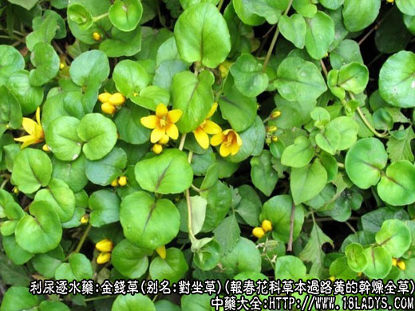
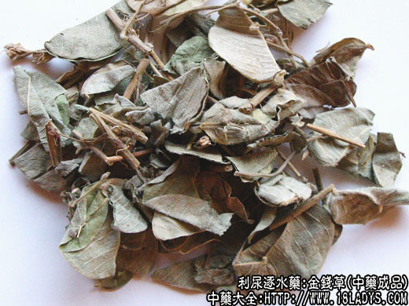
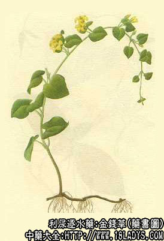

本品为少常用中药。始载《本草纲目拾遗》。原名“蜈蚣草”。
别名：对坐草（江苏）、路边草（湖南）、神仙对坐草（浙江）、大金钱草（四川）。
来源：本品为报春花科珍珠莱属多年生草本植物过路黄的干燥全草，野生。
产地：主产于四川、江苏、湖南、江西以及江南各省均有分布。
性状鉴别：（植物形态）：全草茎长20～60厘米。细弱平卧而生，稀披茸毛或近无毛。叶对生，卵圆形或肾形，全缘，叶片具紫黑色条斑，叶柄较长。夏日叶腋生黄色小花，花柄尤长，可达叶端。萼5片，花冠5瓣深裂，线形。雄蕊5枚。蒴果。本品因产地加工方法不一，干燥后，有的作顺直长条状，有的则散乱弯曲，红褐色。叶片卷缩，红褐色或青褐色。气无味淡。
以茎叶较完整、黄棕色、无杂草者为佳。
主要成分：含挥发油、鞣质、黄酮类钾盐等。
药理作用：1、利尿，可能与其所含钾盐有关。
2、排石。可能通过化石作用，把结石碎化为砂，或通过利尿作用，把细结石冲出。
3、利胆。其煎剂能促进汁从胆管排出。
炮制：切咀、生用。
性味：性平、味淡。
归经：入肝、胆、膀胱经。
功能：清热消炎、利尿通淋、排结石。
主治：肾结石、输尿管结石、膀胱结石（沙石淋）、肝胆结石。外敷治恶疮。
临床应用：主要用于治疗泌尿系结石，对胆道结石治疗也有一定作用。
1、用于治疗膀胱、输尿管结石。可用金钱草60g、煎汤代茶，另用金钱草配海金沙等煎服，方如输尿管结石方，治疗效果良好，确能使不少病例的结石排出或消失。
2、用于治疗肾结石，要配石苇、鱼脑石等以加强利水通淋作用，并配杜仲、核桃肉等补益药以补肾，方如肾石一方。
3、用于治疗胆道结石，四川大金钱草作用较好，且需配茵陈、柴胡、栀子等药，方如胆道排石汤，适宜于没有明显梗阻和感染的胆道结石。
使用注意：用金钱草治结石，时间须较长，要长期坚持服药，一般需一个月以上。
又长期或大量服用金钱草，会产生头晕，心悸等反应，这可能与利尿排钾有关，除适当补充钾盐外，中药或配用固肾药如金樱子、芡实之类。
用量：常用量：30～60g，单味最大用120～150g。
处方举例：1、输尿管结石方：金钱草60g、木通9g、瞿麦24g、车前子9g（包煎）、生滑石15g（炒）、山栀9g、海金砂18g（包煎）、萹蓄18g，水煎服。如能加琥珀末0.6～0.9g冲服更好。
2、肾方一方：金钱草60g、瞿麦18g、生滑石30g、海金沙21g（包煎）、杜仲24g、木通9g、怀牛膝12g、党参9g、鸡内金9g、鱼脑石12g、核桃肉30g、石苇12g、两头尖12g（如无，可用郁金12g代替），水煎服。
3、胆道排石汤：茵陈30g、金钱草30g、黑山栀12g、柴胡6g、丹参12g、枳壳6g、赤芍6g、白芍6g、广木香9g，水煎服。
4、排石汤（遵义医学院方）：金钱草30g、黄芩9g、大黄6g、枳壳9g、川楝子9g、木香9g，水煎服。
注：金钱草，现已成为治疗胆、肾和膀胱结石症的一种新兴草药。由于各地用品种不同，同名异物较多。原植物科属也不相同。除上述报春花科植物过路黄（四川称大金钱草），习用地区较广外，还有下列四种在不同地区作金钱草用。
1、四川小金钱草：为旋花科植物马蹄金的全草。别名：黄胆草、小迎风草（重庆）、小马蹄草（成都）、金挖耳（广西）、荷包草（浙江）。
2、广金钱草：为豆科山蚂蟥属植物金钱草的地上全草。别名：金钱草（广东、湖南、广西）、假花生（南宁）、落地金钱（广州）。
3、江苏金钱草：为唇形科活血丹属植物长管理活血丹的全草。别名透骨消（四川）、连钱草（江苏、上海），金钱草（杭州）。
江西金钱草：原植物有二：1、为伞形科天胡荽属植物天胡荽的全草。2、为同科天胡荽属植物破铜钱的全草。别名：小金钱草（江西、浙江）、满天星（四川、广西）、明镜草（重庆）、星宿草（成都）、小铜钱草（安徽、江苏）、铜钱草（湖南）。
天津北京主要销售正文所述的报春花科过路黄；北京也习销广金钱草。其形状如下：茎细圆柱形，长短不一，密披黄绿色短柔毛，茎部木质。叶互生一或三片，多卷缩，顶端叶呈圆形，先端微凹，全缘，横出平行脉。叶面无毛，叶背密被黄绿色绒毛，侧生叶椭圆形。总状花序顶生或腋生，紫色。果实为荚果（全草与寻骨风相似）。
各地对金钱草的功效，在地区使用上也略有不同，如1、四川大金钱草治胆结石；小金钱草民间也有用于治胆结石病。2、江苏金钱草用于胆囊炎。3、江西金钱草多用于肾结石。4、广金钱草多用于膀胱结石。